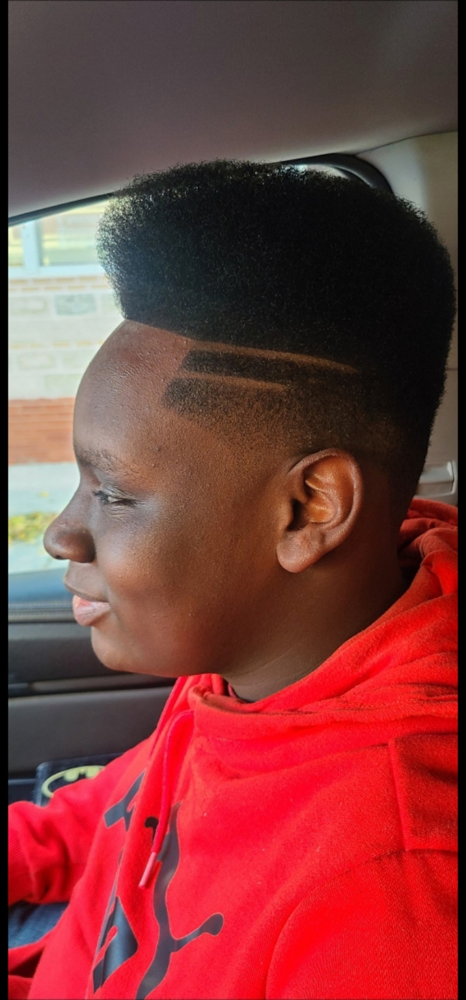
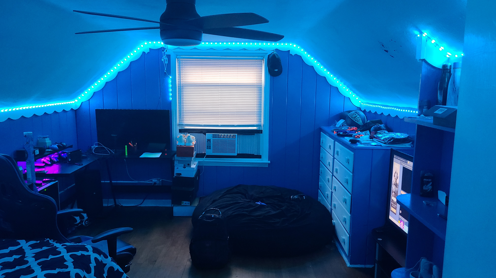

My favorite place

My favorite place is my home.
Things I like to do at home
- Cooking
- Watch movies
- Play video games
- Listen to music
- Watch anime
- Decorating my room
- sleep most importantly
My favorite thing to cook
My favorite thing to cook is egg rolls because they are easy to make and everyone can help make them and here is the recipe.
Taco Eggrolls
First brown some ground beef
Then in the same pot, add these following ingredients
taco seasoning
shredded cheese
(Optional) some chopped onions
(Optional) some chopped tomatoesDont add lettuce it will welt in the frying process
sour cream
taco sauce
Then stir everything together
Then take some egg roll wrappers and fill them with the mixture
Then fry them in some oil until they are golden brown
Optional
Make a side of sour cream and taco sauce to go with the egg rolls
